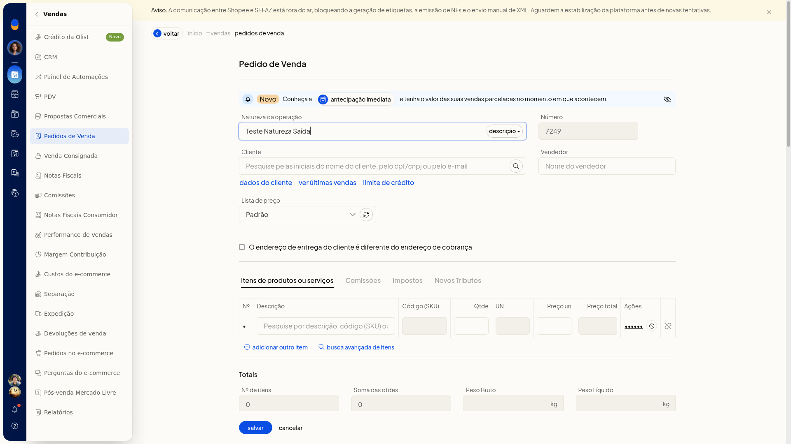
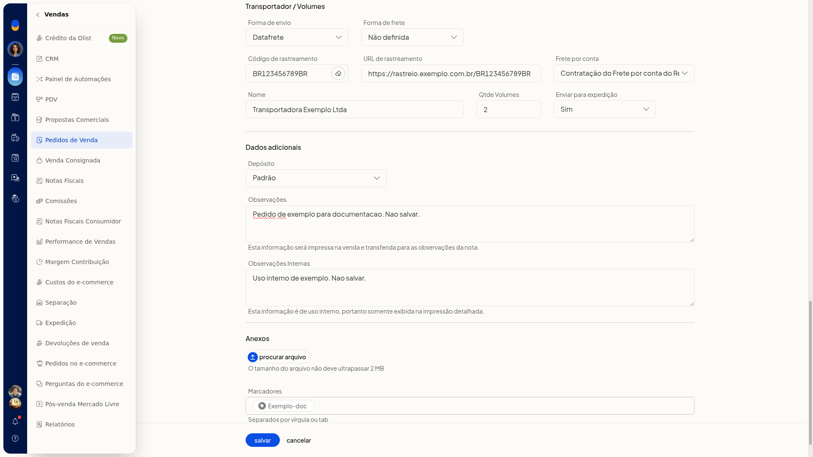
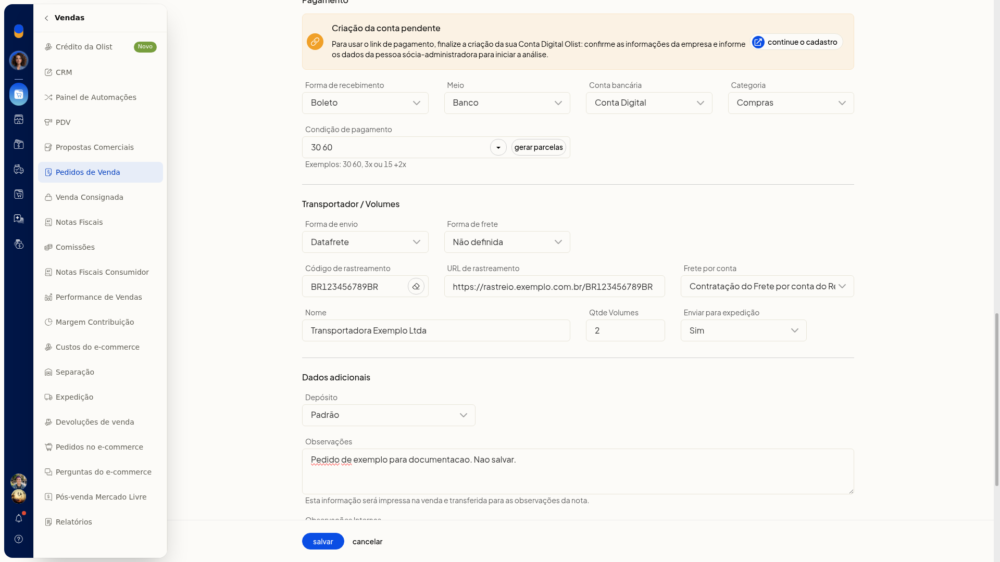
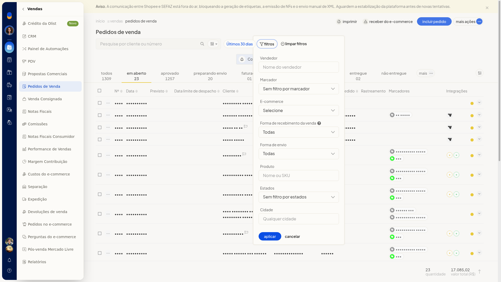
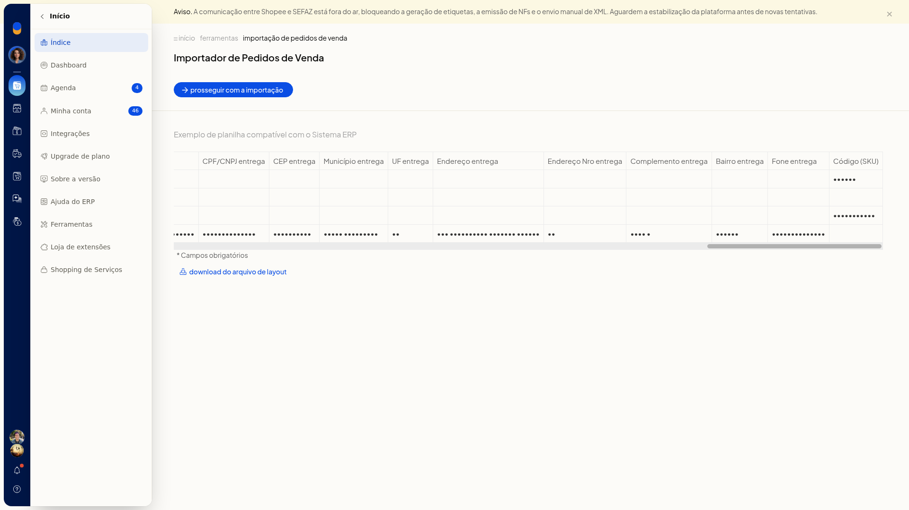
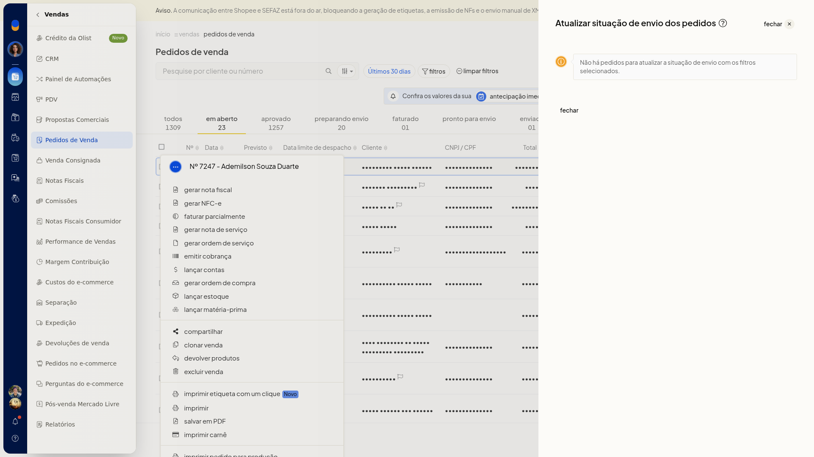
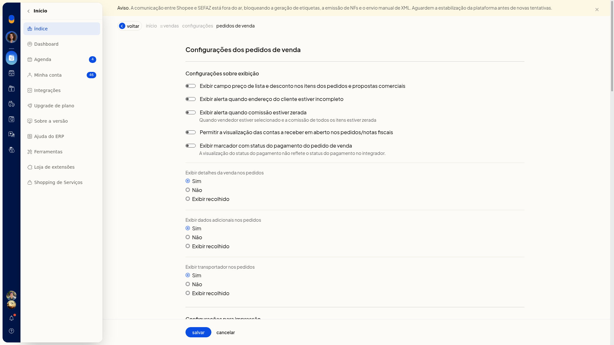
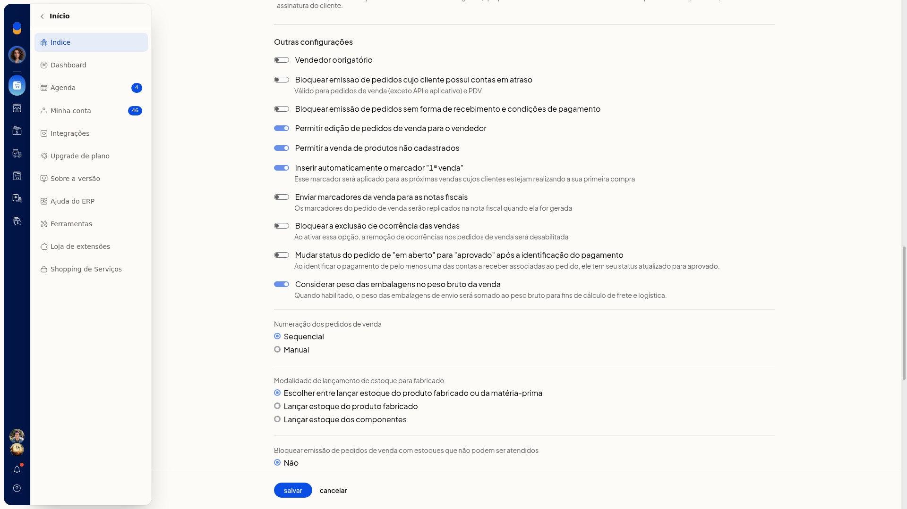

Pedidos de venda: incluir, filtrar e gerenciar
Em Pedidos de Venda, no ERP da Olist, você inclui um pedido, filtra a lista e acompanha a situação. A partir do pedido, você gera nota, estoque, cobrança e impressão e atualiza o envio.
A inclusão também pode começar por planilha ou pelo ecommerce. Exibição, impressão, numeração, estoque, desconto e regras de emissão ficam em Configurações dos pedidos de venda.
Pré-requisitos
- Se alguma opção não aparecer para você, peça acesso ao administrador da conta.
Importante
- Vendedor, lista de preço, depósito, forma de recebimento e lojas de ecommerce vêm dos cadastros da empresa.
- Na planilha, a coluna Nome do contato é obrigatória.
- Com Vendedor obrigatório ativo, o vendedor passa a ser exigido no pedido.
- Com o bloqueio de emissão sem forma de recebimento ativo, o pedido exige forma de recebimento e condições de pagamento.
Instruções
Incluir pedido pela tela
-
Acesse Vendas > Pedidos de Venda.
-
Clique em Incluir pedido.
-
Preencha Cliente, Vendedor e Lista de preço. A tela pode já trazer Número, Natureza da operação, Data da venda e Observações. Use o controle de endereço de entrega diferente quando o destino não for o do cliente.

-
Informe os itens em Descrição do item, Quantidade e Valor unitário. Quantidade e valor unitário usam vírgula decimal. A tela mostra número de itens, soma das quantidades, peso bruto, peso líquido e os totais de IPI, ICMS ST + FCP ST, ICMS + FCP, PIS, COFINS, Difal, IBS estadual, IBS municipal, IBS total, CBS, total dos produtos e total da venda. Use adicionar outro item ou a busca avançada para incluir mais produtos.

-
Complete Data da venda, Data prevista de entrega, Data de envio, Data máxima de despacho, Nº do pedido, Identificador do pedido e-commerce, Nº no canal, Desconto, Frete do cliente, Frete da empresa e Despesas. Em Desconto, use valor como 3,00 ou percentual como 10%. Frete e despesas usam vírgula decimal.
-
Em recebimento, preencha Forma de recebimento, Meio, Gateway, Categoria e Condição de pagamento. Use gerar parcelas se quiser montar as parcelas. Há também o controle Sem intermediador.
-
Em envio, preencha Forma de envio, Forma de frete, Frete por conta, Nome do transportador, Código de rastreamento, URL de rastreamento, Quantidade de volumes, Enviar para expedição e Depósito.
-
Preencha Observações, Observações internas e Marcadores. A tela também oferece dados do cliente, ver últimas vendas e limite de crédito.

-
Clique em Salvar para gravar o pedido. Cancelar descarta a inclusão. O pedido fica com os totais calculados na tela.
Filtrar pedidos na lista
- Acesse Vendas > Pedidos de Venda.
- Escolha a aba de situação: Todos, Em aberto, Aprovado, Preparando envio, Faturado, Pronto para envio, Enviado, Entregue ou Não entregue. No excedente da barra estão Dados incompletos, Em devolução e Cancelado. Cada aba mostra a quantidade.
- Use a busca e o período.
- Abra os filtros e preencha o que precisar:
- Vendedor
- Marcador, com Sem filtro por marcador e os marcadores da empresa, entre eles 1ª venda
- E-commerce, com Selecione, Sem vínculo, plataformas como Tray, VTEX, Dooca, Cartpanda, Yampi, Nuvemshop, Loja Integrada, Wix, Shopify, Shein, Amazon e Shopee, e as lojas da empresa
- Forma de recebimento da venda
- Forma de envio, com a opção Todas
- Produto
- Estados, com UF de AC a TO e EX
- Cidade
-
Clique em Aplicar. A lista mostra só os pedidos da situação, do período e dos filtros escolhidos. Cancelar fecha o painel sem aplicar. Na lista também há limpar filtros.

Usar as ações do pedido
-
Acesse Vendas > Pedidos de Venda.
-
Localize o pedido.
-
Abra o menu ••• desse pedido.

-
Escolha a ação. O menu traz Gerar nota fiscal, Gerar NFC-e, Faturar parcialmente, Gerar nota de serviço, Gerar ordem de serviço, Emitir cobrança, Lançar contas, Gerar ordem de compra, Lançar estoque, Lançar matéria-prima, Compartilhar, Clonar venda, Devolver produtos, Excluir venda, Imprimir etiqueta com um clique, Imprimir, Salvar em PDF, Imprimir carnê, Imprimir pedido para produção e Alterar situação. Você vê o que pode gerar, lançar ou imprimir antes de confirmar.
Alterar a situação do pedido
- Acesse Vendas > Pedidos de Venda.
- Abra o menu ••• do pedido.
- Em Alterar situação, selecione a nova situação nos pontos coloridos: Em aberto, Aprovado, Preparando envio, Faturado, Pronto para envio, Enviado, Entregue, Não entregue, Dados incompletos, Em devolução ou Cancelado. A escolha fica no próprio menu, antes de confirmar a mudança.
Importar pedidos de uma planilha
-
Acesse Vendas > Pedidos de Venda.
-
Abra Mais ações.
-
Clique em Importar pedidos de uma planilha.
-
Em Importador de Pedidos de Venda, clique em Download do arquivo de layout.

-
Preencha a planilha. A coluna Nome do contato é obrigatória. As demais colunas do layout são: ID, Número do pedido, Data, Data prevista, ID contato, Tipo de Pessoa, CPF/CNPJ, RG/IE, CEP, Município, UF, Endereço, Endereço Nro, Complemento, Bairro, Fone, Celular, e-mail, Desconto pedido (% ou valor), Frete, Observações, Situação, ID produto, Descrição, Quantidade, Valor unitário, Desconto item %, Código de rastreamento, Número da ordem de compra, Vendedor, Despesas, Desconto do pedido rateado, Frete pedido rateado, Despesas pedido rateado, Destinatário, CPF/CNPJ entrega, CEP entrega, Município entrega, UF entrega, Endereço entrega, Endereço Nro entrega, Complemento entrega, Bairro entrega, Fone entrega e Código (SKU).

-
Clique em Prosseguir com a importação para enviar a planilha preenchida.
Receber pedidos do ecommerce
-
Acesse Vendas > Pedidos de Venda.
-
Clique em Receber do e-commerce ou em Mais ações > Receber pedidos do e-commerce.
-
Na tela Pedidos no e-commerce, use a busca de pedido, que inclui a plataforma.

-
Clique em Ações > Iniciar recebimento para começar o recebimento.
Importar um pedido do ecommerce
- Acesse Vendas > Pedidos de Venda.
- Abra Mais ações.
- Clique em Importar pedido do e-commerce. O caminho da importação de um pedido fica nesse menu.
Atualizar a situação de envio
-
Acesse Vendas > Pedidos de Venda.
-
Abra Mais ações.
-
Clique em Atualizar situação de envio dos pedidos. A tela indica se os filtros atuais deixam algum pedido elegível.

-
Clique em Fechar para voltar à lista quando não houver pedido para atualizar.
Exportar pedidos para planilha
- Acesse Vendas > Pedidos de Venda.
- Abra Mais ações.
- Clique em Exportar pedidos para planilha.
Imprimir relatório e consultar multiempresa
- Acesse Vendas > Pedidos de Venda.
- Abra Mais ações.
- Clique em Imprimir relatório ou em Consultar pedidos multiempresa. A barra da lista também tem Imprimir.
Configurar os pedidos de venda
-
Acesse Configurações > Configurações ERP.
-
Em Vendas, abra Configurações dos pedidos de venda.

-
Em exibição, ajuste:
-
Exibir campo preço de lista e desconto nos itens dos pedidos e propostas comerciais
-
Exibir alerta quando endereço do cliente estiver incompleto
-
Exibir alerta quando comissão estiver zerada, quando o vendedor estiver selecionado e a comissão de todos os itens estiver zerada
-
Permitir a visualização das contas a receber em aberto nos pedidos/notas fiscais
-
Exibir marcador com status do pagamento do pedido de venda
-
Exibir detalhes da venda nos pedidos, Exibir dados adicionais nos pedidos e Exibir transportador nos pedidos, em Sim, Não ou Exibir recolhido

-
Em impressão, ajuste Imprimir número do pedido em código de barras, Imprimir descrição complementar dos produtos nos pedidos de venda, Imprimir cabeçalho na impressão de pedidos para produção, Incluir campos de data e assinatura para comprovação de entrega na impressão de pedidos de venda, Imprimir endereço da empresa, Imprimir a imagem dos produtos na impressão detalhada do pedido de venda, Imprimir nome fantasia ao invés de razão social nas vendas e propostas, Calcular impostos nas vendas e Imprimir impostos dos itens na impressão detalhada do pedido de venda. Nesse último, selecione quais impostos imprimir. Em Ordenação dos itens na impressão dos pedidos de venda, escolha Inclusão no pedido, Código (SKU) do produto ou Descrição do produto.

-
Em consignação, ajuste Bloquear novas consignações em caso de atraso, Limite de produtos e Observação padrão para as vendas consignadas. O bloqueio impede nova consignação para clientes com pedidos vencidos em aberto. O limite é a quantidade máxima de produtos em cada venda por consignação. A observação padrão preenche Observações da nova venda consignada e sai no comprovante, acima da assinatura.
-
Ajuste as outras regras: Vendedor obrigatório, Bloquear emissão de pedidos cujo cliente possui contas em atraso, Bloquear emissão de pedidos sem forma de recebimento e condições de pagamento, Permitir edição de pedidos de venda para o vendedor, Permitir a venda de produtos não cadastrados, Inserir automaticamente o marcador "1ª venda", Enviar marcadores da venda para as notas fiscais, Bloquear a exclusão de ocorrência das vendas, Mudar status do pedido de "em aberto" para "aprovado" após a identificação do pagamento e Considerar peso das embalagens no peso bruto da venda.

-
Em Numeração dos pedidos de venda, escolha Sequencial ou Manual. Em Modalidade de lançamento de estoque para fabricado, escolha entre produto fabricado ou matéria-prima, lançar estoque do produto fabricado, ou lançar estoque dos componentes. Em Bloquear emissão de pedidos de venda com estoques que não podem ser atendidos, escolha Não ou Sim.
-
Em Campo vendedor no cadastro de vendas via API, escolha Não aceita se vendedor não existe, Aceita sem o vendedor ou Cadastra o vendedor automaticamente.
-
Informe Quantidade de volumes padrão, Aviso de contas a receber em atraso, Desconto máximo nos itens, Desconto máximo nos itens para gerente, Observação padrão para os pedidos de vendas e Depósito para lançamento de estoque de devoluções de vendas. O aviso pode ficar em Não avisar ou Avisar a partir de 1 a 10 dias. O depósito oferece Mesmo depósito da venda/nota e os depósitos da empresa.

-
Clique em Salvar para gravar as regras. Cancelar descarta a alteração.
Resultado
A lista de Pedidos de Venda reúne as abas de situação, a busca, o período e as ações Incluir pedido, Receber do e-commerce, Imprimir e Mais ações. No menu do pedido ficam as ações fiscais, de estoque, de impressão e os pontos de Alterar situação.
Informações adicionais
- O marcador 1ª venda entra nas próximas vendas em que o cliente faz a primeira compra.
- Os marcadores do pedido são replicados na nota fiscal quando ela é gerada, se o envio de marcadores estiver ativo.
- Com o bloqueio de exclusão de ocorrência ativo, a remoção de ocorrências nos pedidos fica desabilitada.
- Ao identificar o pagamento de pelo menos uma conta a receber do pedido, o status pode ir de em aberto para aprovado.
- O peso das embalagens de envio entra no peso bruto usado no frete e na logística, quando essa opção está ativa.
- A quantidade de volumes padrão vale para pedidos de venda e notas fiscais.
- Para não limitar Desconto máximo nos itens ou Desconto máximo nos itens para gerente, informe 100.
- O marcador de status do pagamento não reflete o status do pagamento no integrador.
- A validação de estoque que não pode ser atendido não é feita para pedidos incluídos via API, aplicativo móvel e ecommerce.
- O bloqueio por contas em atraso, quando habilitado, vale para pedidos de venda, exceto API e aplicativo, e para o PDV da Olist.